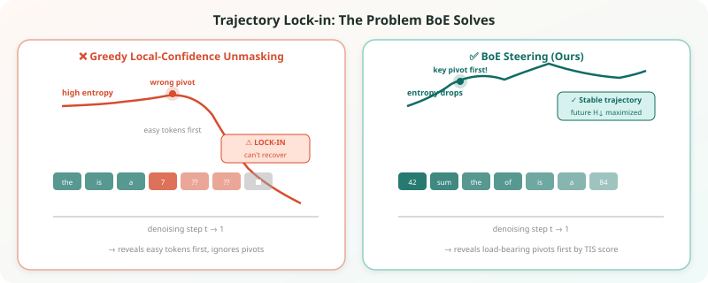
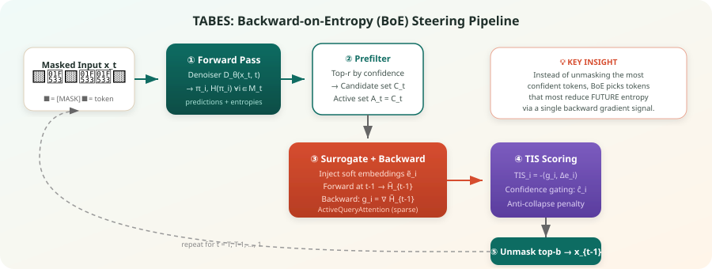
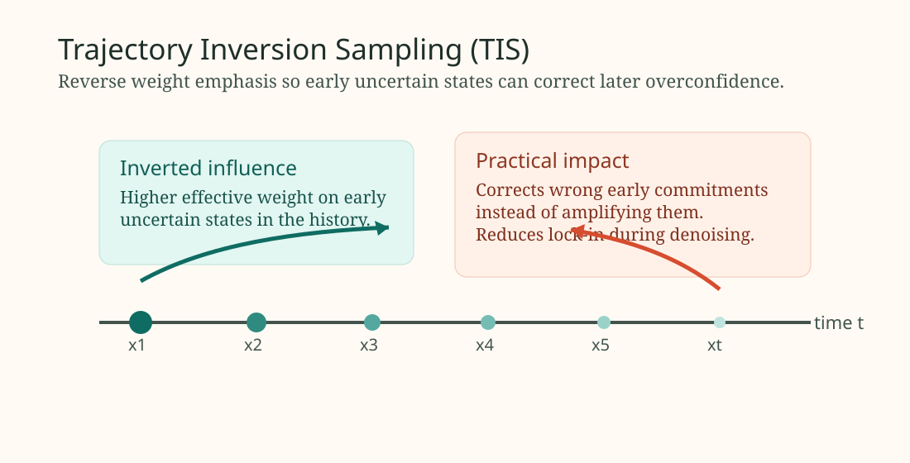
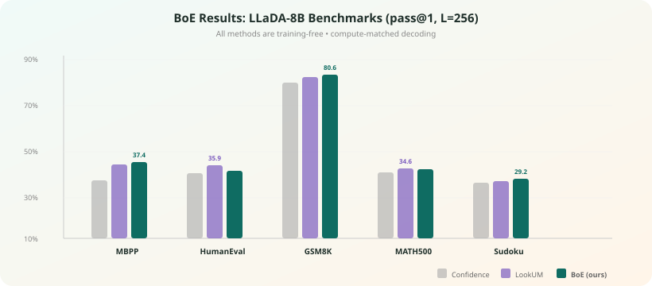

Method Explainer
TABES, Explained for Humans
This post breaks down TABES (Trajectory-Aware Backward-on-Entropy Steering) in practical terms. The central challenge is simple: in masked diffusion generation, if you become overconfident too early, you can lock into a bad trajectory and cannot recover later.
1. The failure mode: trajectory lock-in
Existing guidance methods mostly push confidence in one direction: minimize entropy at every denoising step. This helps when early predictions are correct, but hurts when they are wrong. Wrong tokens get reinforced, and the decoding path loses diversity too fast.

2. The TABES principle: steer with confidence and uncertainty
TABES introduces bidirectional entropy steering:
- Forward term: keeps useful confidence growth.
- Backward term: estimates whether the current direction is likely to reduce future uncertainty.
Instead of trusting only the next token posterior, TABES also asks whether a candidate move is consistent with a healthier trajectory over the whole denoising process.

3. Component A: adaptive forward entropy steering (ASET)
ASET still uses entropy minimization, but adaptively. The paper estimates whether a token update decreases uncertainty using score-norm differences, then scales guidance with a timestep-aware coefficient.
s_TABES(x_t,t) = alpha_t * s_forward(x_t,t) + beta_t * s_backward(x_t,t)
Intuition: early steps need exploration, late steps can safely sharpen confidence. Adaptive scaling helps avoid premature collapse.
4. Component B: trajectory inversion sampling (TIS)
TIS constructs a backward guidance score from the current trajectory history, but with inverted weights. Earlier uncertain states receive larger effective influence, so the model can recover from locally overconfident mistakes.

This is the key anti-lock-in mechanism: the sampler gets a controlled "look back" signal rather than only greedy forward sharpening.
5. Anti-collapse schedule and gating
TABES modulates guidance strengths over time with smooth schedules (tanh-style in the paper), and applies threshold-based gating so backward correction is emphasized when confidence signals become suspiciously sharp.
Practical effect: strong correction when needed, less interference when the trajectory is already stable.
6. Why this works in practice
The paper reports strong gains while keeping the method training-free:
- Average relative improvements on text completion over baseline guided samplers.
- Additional gains on code infilling and protein sequence design benchmarks.
- Ablations showing backward steering and anti-collapse scheduling both matter.

7. Minimal mental model
If you remember one thing: TABES is confidence with memory. Standard guidance says "be sure now"; TABES says "be sure now only if the whole trajectory still makes sense."